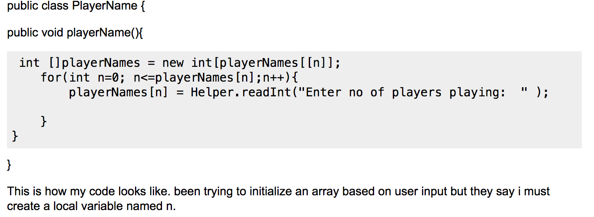
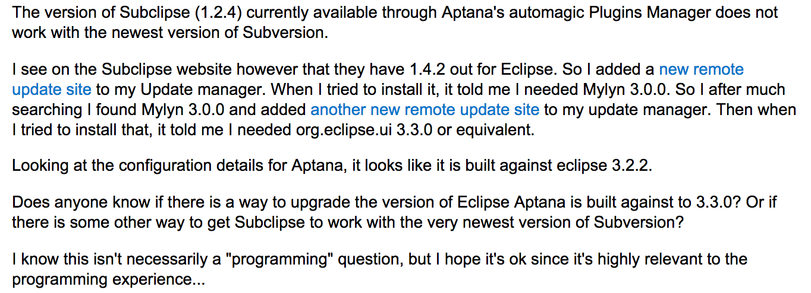

How To Ask A Good Question
November 15th, 2014
Life is a continuous education. One of the major attractions to programming for me is that there is an endless amount of information to digest, and the entire tech industry is constantly evolving. There will always be something new to figure out and explore which means the career of a programmer is dependent on constantly asking questions and learning new technologies. But what differentiates a good question from a bad question?
It is important to understand how to ask good questions, because when you ask a good question (especially in an online forum) you are more likely to find someone who can answer your question, and the answer is more likely to help you out. The characteristics of a good question are:
- Be specific: Write a title that summarizes the specific problem
- Be detailed: Make it clear what you are trying to get out of the question
- Ask the right person/choose the right forum
- Google is your friend: Try to find an answer before asking your question
- Spelling, grammar, and presentation are important
Lets look at an example of a poor question from Stackoverflow.com:
How can i create an array based on the user input?
{kind=link}
The person who asked this question is unlikely to receive a helpful answer. The first problem is that the title is not specific enough. What language is this person working in? The next problem is that the question is formatted poorly. You should introduce your problem before posting any code. The first paragraph in your question is the second thing most readers will see, so make it as engaging and informative as possible. The third major problem is the grammar and punctuation. The poster has some capitalization mistakes in the title of the question as well as in the last sentence. The poster should have had someone more comfortable with writing in english proofread his post before submitting it.
Now lets look at a an example of a good question from Stackoverflow.com:
How can you get Subclipse in Aptana to work with the newest release of Subversion?
{kind=link}
The author of this question is very specific about what he is having difficulty with in the title of his post. He provides a very detailed description of exactly what error he is getting, why he believes it is happening, and possible solutions he has already tried. He acknowledges in his post that this may not be strictly a programming question, but justifies why he believes he may find someone in this forum who can give him an answer. His spelling and grammar are correct throughout the entire post which makes his question easier to read and understand.
Now that you have seen the difference between a good question and a bad question, what can you do to make sure you only ask good questions? The most important thing to do is to review what you have written before submitting it. Imagine you are seeing this question for the first time and ask yourself the following questions:
- Does it make sense?
- Is it clear what is being asked?
- Is it easy to read and understand?
- Did you demonstrate the problem?
- What are you trying to accomplish?
- What have you already tried?
- Did you explain how you have failed?
Following these guidelines won’t guarantee that every question you ask or post to a forum will be answered, but it does make it more likely that someone else will be able to understand and answer your question. Another side helpful side effect of going through this process is that you can sometimes figure out an answer to your own question before having to ask it.
Thanks for reading.